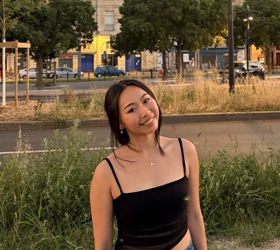

______

PhD student studying how _____. I work in the Lab Name, where I _______.
I'm a doctoral student in the Princeton Neuroscience Institute. My research asks how _______.
Before Princeton I completed my undergraduate degree at The College of New Jersey, where I worked on cardiorespiratory dysfunction in serotonin difficient mice, recognition memory in humans using EEG, and substance use disorders using a behavioral economic framework. Outside the lab I love to have fun debates, try to increase my healthspan, scuba dive, ski, and cook.
My work sits at the intersection of ______ and _______. Broadly, I'm interested in:
Reach me at aw4206@princeton.edu, or find me here: